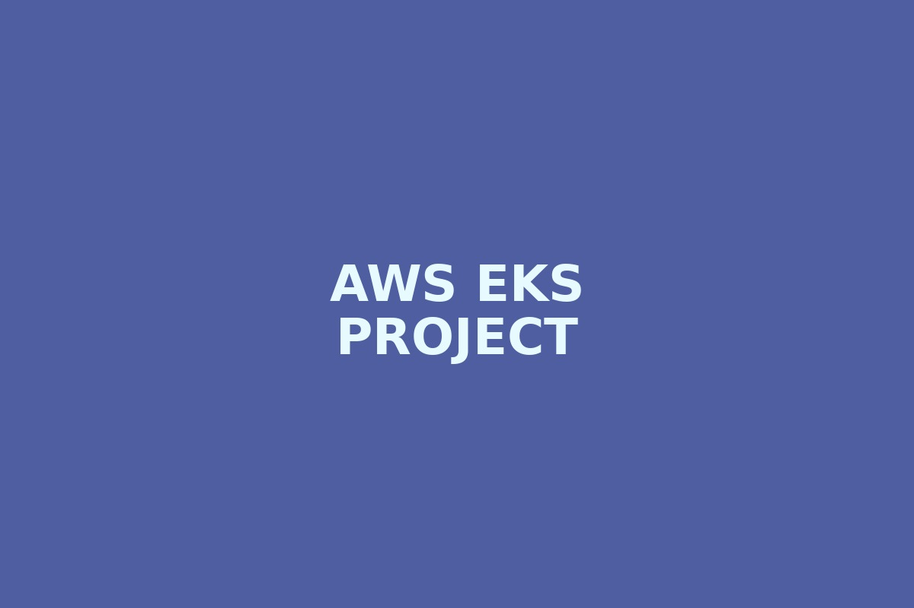
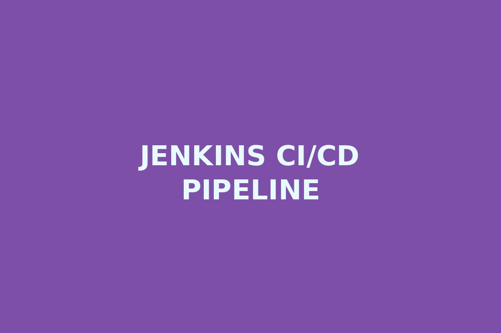
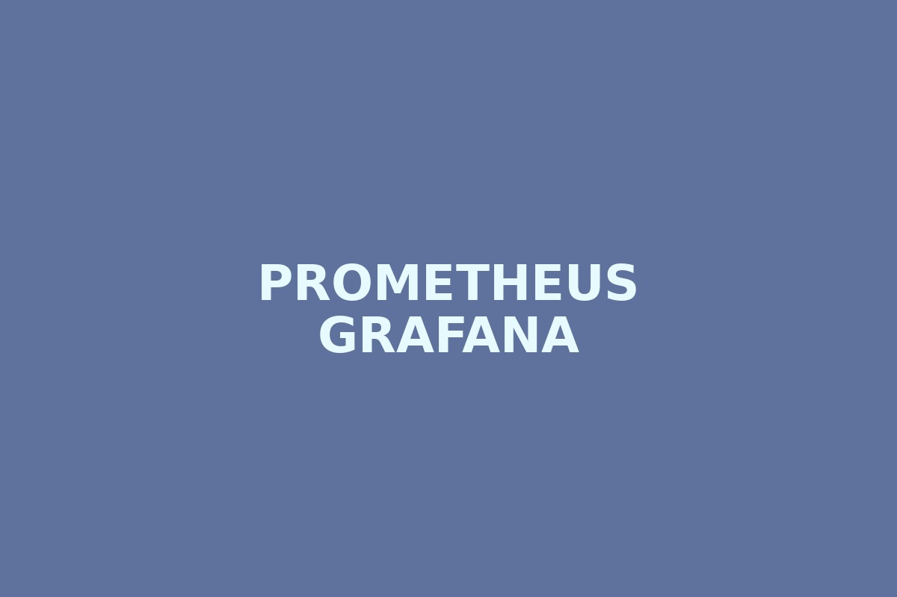

AWS EKS Kubernetes Deployment
Created EKS cluster, deployed containerized application, exposed service, and verified app availability.
AWS • EKS • KubernetesLinux Administrator → DevOps Engineer
IT Analyst at TCS with strong Linux administration experience and hands-on DevOps practice across Docker, Kubernetes, Jenkins, AWS, GitHub Actions, Ansible, CI/CD, SSL, and monitoring.

Portfolio Vibes — replace with your song
About Me
I am an IT Analyst based in Mumbai, currently working with TCS. My core strength is Linux server administration, production troubleshooting, patching, LVM/storage, SSL certificates, and enterprise operations.
I am actively building DevOps expertise with Docker, Kubernetes, AWS EKS, Jenkins, GitHub Actions, Ansible, Terraform, Prometheus, Grafana, and CI/CD deployment workflows.
I focus on stable deployments, clear automation, strong monitoring, secure configuration, and practical troubleshooting. My goal is to bridge Linux operations with modern cloud-native DevOps.
Skills
Projects

Created EKS cluster, deployed containerized application, exposed service, and verified app availability.
AWS • EKS • Kubernetes
Designed build, test, Docker image push, and Kubernetes deployment workflow for a microservice app.
Jenkins • Docker • GitHub
Integrated Prometheus and Grafana concepts for cluster/application monitoring and alert visibility.
Prometheus • GrafanaAvailable for DevOps roles
Interested in DevOps Engineer, Linux Administrator, Cloud Engineer, and Kubernetes deployment roles.